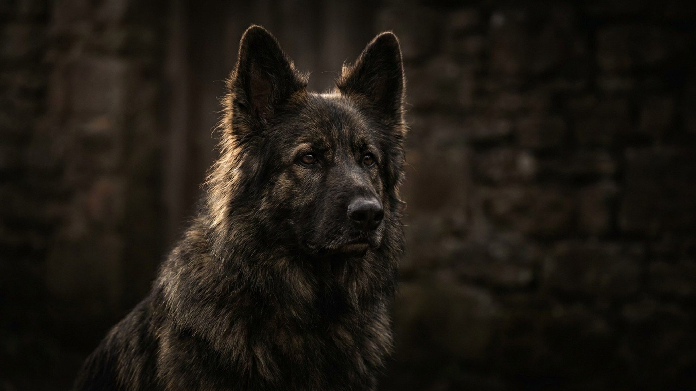

Южнорусская овчарка выглядит как добродушная белая копна, но выводили её охранять отары от волков в одиночку, без команд пастуха. Эта самостоятельность и недоверие к чужим — не брак воспитания, а сама порода, и новичков она застаёт врасплох. Разберём, что за собакой скрывается под шерстью: сколько её чесать, как работает охранный инстинкт и кому такой характер по силам.
🐾 У вас южнорусская овчарка?
AnimaLife соберёт уход под породу: к каким болезням есть склонность, что проверять по возрасту, чем кормить и когда пора к врачу. Бесплатно, прямо в мессенджере.
Собрать план ухода → Собрать в MAX →
У вас iPhone? AnimaLife есть в App Store
Южнорусская овчарка — крупная отечественная пастушья порода (рост от 62–65 см, вес нередко под 50 кг у кобелей). Веками она не просто пасла овец, а охраняла их и чабана от хищников, часто сутками оставаясь без человека рядом.
Отсюда её психология: собака самостоятельно оценивает обстановку и сама решает, что считать угрозой. Она умна и предана своей семье, но подозрительна к чужакам и территориальна. Это не компаньон «для всех», а охранник с собственным мнением.
Длинная густая шерсть закрывает собаку целиком, включая глаза, и без ухода быстро сваливается в колтуны — а под ними преет кожа. Груминг здесь не роскошь, а обязательная рутина.
Стричь наголо породу не стоит без необходимости: шерсть защищает и от жары, и от холода. Форму стрижки лучше обсудить с грумером, знакомым с породой.
Территориальность у южака включается рано, поэтому ранняя и грамотная социализация — не опция, а условие. Щенка с первых месяцев знакомят с людьми, звуками, другими животными и городом, чтобы он отличал гостя от угрозы.
Такой собаке нужен спокойный, последовательный хозяин-лидер и понятные правила. Жёсткое давление и крик с ней не работают и портят психику: порода чувствительна и злопамятна к несправедливости.
Южнорусская овчарка — для человека с опытом, местом (частный дом с участком подходит лучше квартиры) и готовностью заниматься воспитанием и грумингом. Такому хозяину она отплатит надёжной охраной и глубокой привязанностью.
Новичку, семье с маленькими детьми и потоком гостей или занятому человеку порода дастся тяжело. Прежде чем брать охранную собаку, честно оцените силы, а вопросы здоровья и нагрузки обсуждайте со своим ветеринаром.
🐾 Ваш питомец — южнорусская овчарка?
Заведите профиль в AnimaLife: приложение запомнит породу, возраст и вес и будет подсказывать по уходу именно для неё. Вопросы AI-ветеринару — круглосуточно и бесплатно.
Завести профиль → Завести в MAX →
У вас iPhone? AnimaLife есть в App Store
🐾 Понравился разбор?
Подпишитесь на канал — каждый день разбираем по одному тревожному симптому у кошек и собак: что в пределах нормы, а когда пора к врачу. Подпишитесь, чтобы не пропустить разбор, который может спасти здоровье вашего питомца.